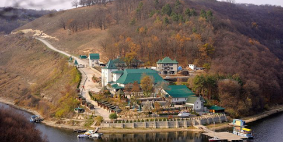
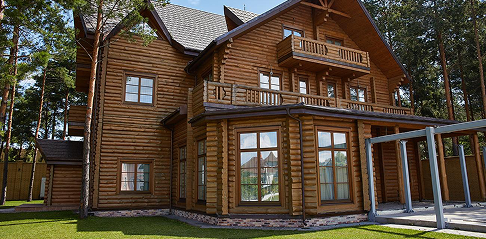

-

Незвідана Бакота
У Хмельницькій області розташований загублений край - Бакота. Мальовничий каньйон з давньою історією захоплює своїми просторами та незвичною атмосферою. Бджільництво, свіжий мед із польових трав, дотик до природи.
-

Полонини Карпат
Полонини Карпат, у селі Орів посеред гір розташувався затишний куточок для незабутніх вражень. Справжні українські гори, власноруч сироваріння на полонині, водоспади та вікові дерева чекають на Вас.
-

Автентична Київщина
Неподалік центра Києва розташувалось автентичне українське село на території села Пирогово. Дерев'яні млини, запашний хліб, приготований своїми руками, українські пісні та багато іншого.
-

Нетипова Одещина
В Одеській області знаходиться містечко Вилкове, яке називають українською Венецією. Це місто на воді з каналами, де люди пересуваються човнами. Нетипова Україна, яка залишає враження.